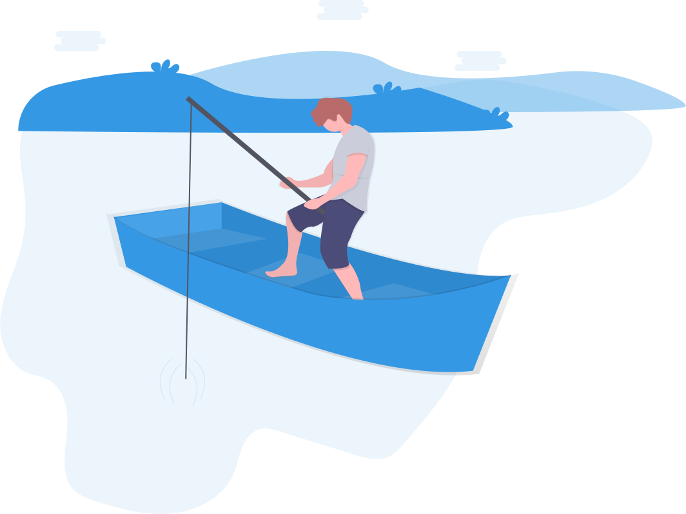

<div class="gray-bg">
  <div class="container-fluid empty-container">
    <div class="row">
      <div class="col-lg-12 text-center">
        
        <h4><strong>ERROR 404:</strong>  YOU SEEM TO HAVE LOST YOUR CATCH</h4>
        <button class="outline-btn" routerLink="/">
          fish somewhere else
        </button>
      </div>
    </div>
  </div> 
</div>